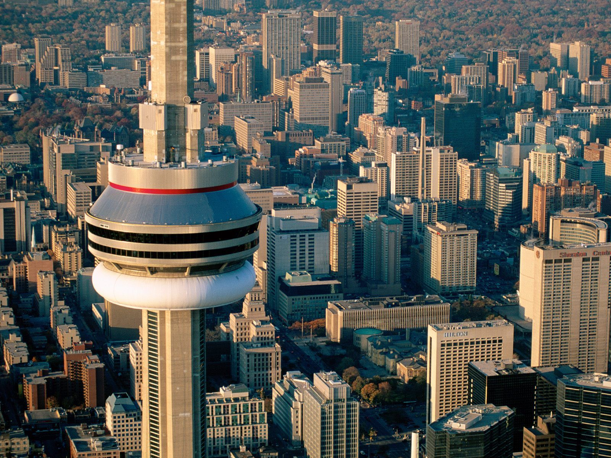

CN Tower
EdgeWalk is CN Tower’s most thrilling attraction in its history, and the first of its kind in North America. It is the world’s highest full circle hands-free walk on a 5 ft (1.5 m) wide ledge encircling the top of the Tower’s main pod, 356m/1168ft (116 storeys) above the ground. EdgeWalk is a Canadian Signature Experience and an Ontario Signature Experience
Visitors walk in groups of six, while attached to an overhead safety rail via a trolley and harness system. Trained EdgeWalk guides will encourage participants to push their personal limits, allowing them to lean back over Toronto with nothing but air and breathtaking views of Lake Ontario beneath them.
Designed with the highest international safety and security standards in mind, EdgeWalk runs for 1.5 hours, with the outdoor walk lasting approximately 30 minutes. Tickets starting at $195 CAD (plus tax) and include a keepsake video, printed photos and certificate of achievement. Participants also receive (following your EdgeWalk) a Tower Experience Ticket which includes access to the LookOut, Glass Floor, and SkyPod levels. Tickets are one time use and valid for up to 2 days following your EdgeWalk.
The EdgeWalk at the CN Tower will operate seasonally in all weather except for electrical storms, high winds or other extreme weather conditions. Varying weather conditions will make the EdgeWalk experience more unique. Please dress appropriately for the weather conditions.
CN Tower Hours
Please call (416) 86-TOWER to confirm the hours for the date of your visit.Please note currently the only entrance to the CN Tower is the Bremner Boulevard entrance (south side of the CN Tower). Everyone visiting the CN Tower is encouraged to arrive via Bremner Boulevard, for the most convenient access, drop off and parking, especially for mobility challenged visitors. Visitors arriving via Front Street will be directed across the outdoor Rod Robbie (John Street) Bridge toward the Bremner entrance.
Other Attractions:
LookOut Level
Rocket 58 seconds in one of six glass-fronted elevators to the LookOut Level located at 346m / 1,136 feet with breathtaking views. From the LookOut level you will expereince an eye-opening, mind-blowing new perspective on the most spectacular views in Toronto with floor-to-ceiling panoramic Window Walls and an all new Glass Floor, installed directly above the original, one level below.
With floor-to-ceiling glass, this new viewing opportunity provides universal access for everyone, including those with mobility challenges. The glass contains Thermochromic film as part of its structure. This technology allows the glass to adjust its darkness based on sunlight and external temperature to improve energy efficiency. It will also make taking photos easier, allowing guests to fully capture the thrill of this new experience.
Sky Pod
At a thrilling 447 m (1,465ft), high above the city - SkyPod is one of the highest observation platforms in the world with a unique and spectacular view like no other. Board a separate elevator on the LookOut Level to travel through the core of the Tower an incredible 33 additional storeys higher to SkyPod, featuring interpretive exhibits. Learn what happens when the Tower is struck by lightning and watch a pendulum to see how the Tower moves in the wind! Under ideal conditions, visibility is up to 160 km (100 miles) away to Niagara Falls and New York State. A separate ticket is required in addition to the Tower Experience ticket. Tickets can be purchased at the Box Office or on the LookOut Level.
High-Speed Elevators
Thrill to the top of the world in only 58 seconds! Six high-speed glass-fronted elevators give you a breath-taking view as you race upwards at 22 kilometres (15 miles) per hour! Our experienced friendly staff can answer any questions you might have while you take in the sights. Transfer to the SkyPod elevator* on the LookOut Level for another thrilling 33 floors straight up!
Enhanced Elevators with Glass Floor Panels
Lifting off April 9, 2008, the CN Tower introduced North America's first and the world's highest glass floor paneled elevators. Three glass-fronted elevators now offer a thrilling new perspective on the view 346m (1,136 ft) straight down through two glass panels in a portion of each elevator floor. Combined these two panels represent almost 6ft2 of the total 39.25ft2 of elevator floor space.

External Links
- CBC Archives – CN Tower opens to the public. (Multimedia)
- Official CN Tower Website
- Edgewalk
- The Design, Engineering and Construction of the CN Tower – 1972 through to 1976
- A visual construction history of the CN Tower – at 40th year anniversaries